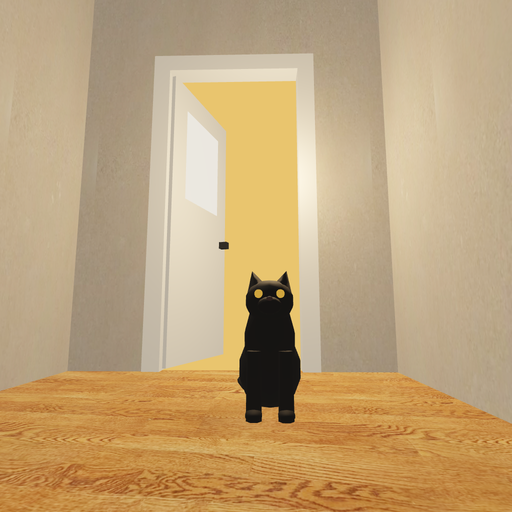

Split Level
Walk in the front door of an ordinary house with nobody home. Open any door and a new room waits behind it. Every room is built from the same house, and every room is a little weirder than the last. There is no end and no way to lose, only the next door.
Version 0.3.0. Release notes · Backlog


What kind of game is this?
Things to do
- Walk through the front door and up the stairs.
- Look around the den, the kitchen and the dining room.
- Open any door to start a run.
- Count the doors and beat your deepest door. The number shows in the corner.
- Spot what is off in each room.
- Go back through the door you came in by and see what changed.
- Take the stairs down and try the doors there.
- Find the black cat and pet her.
- Find all 20 keepsakes.
- Fill your room book.
- Finish today's three goals.
- Earn sixteen achievements.
Controls
WASD or arrows walk. The mouse looks around. E or a click opens a door. Esc opens the Menu.
Left stick walks. Right stick looks around. A opens a door. Menu button opens the Menu.
Left thumb anywhere on the left half walks. Drag on the right half to look. Tap a door or the Open button to open it.
Look speed, invert look, field of view and Gentle rooms are in Settings.
Play with an Xbox controller
Any Xbox Wireless Controller with Bluetooth works. That is every Series X|S controller and the Xbox One controllers made since 2016. If the plastic around the Xbox button matches the face of the controller, it has Bluetooth. Other controllers that your phone or browser sees as a standard gamepad use the same buttons.
- Hold the Xbox button to turn the controller on.
- Hold the small Pair button on top for 3 seconds, until the Xbox button flashes fast.
- On your phone, open Settings, then Connected devices, then Pair new device.
- Tap Xbox Wireless Controller. The Xbox button stays lit when it is connected.
- Open Split Level. The touch buttons hide as soon as you use the controller.
- Connect the controller to your computer with a USB cable or Bluetooth.
- Open Play in your browser. Chrome, Edge, Firefox and Safari all work.
- Press any button once after the game loads, so the browser sees the controller.
The D-pad or left stick moves between buttons. A chooses and B goes back. You can play the whole game with only the controller.
Install on Android
- Tap Download for Android on this page.
- Open the file. Allow installs from your browser if your phone asks.
- Tap Install, then Open.
Android may show a Play Protect notice for apps from outside the Play Store. Version 0.3.0 installs over the last version and keeps your saves.
Feedback wanted
- How walking and looking feel on your phone.
- Whether the rooms feel the right size.
- How the doors feel to open.
- Anything that looks wrong, with a screenshot.
- Your phone or browser.